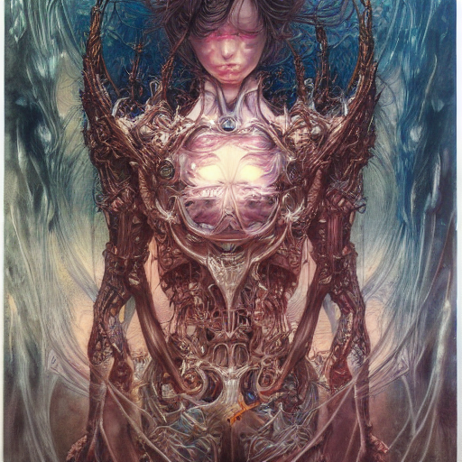
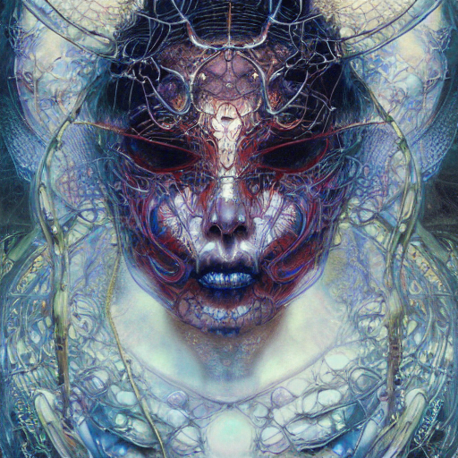
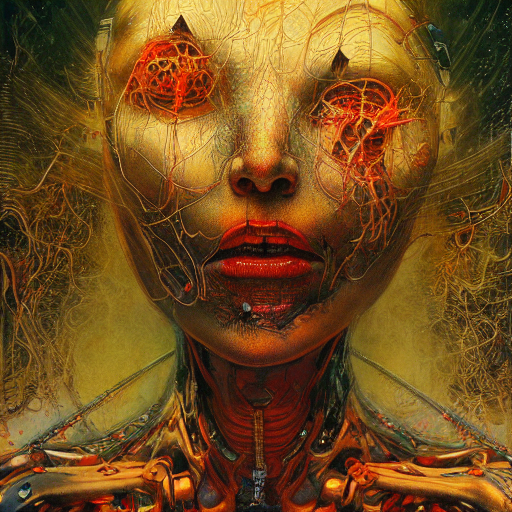

In this post I'll report experiments with Stable diffusion, a machine learning algorithm that allows you to create images from text.
You can also visit the
Hell collection
and the
First test collection .

Key phrase: "realistic_detailed_image_of_a_sentient_artificial_intelligence_by_Ayami_Kojima_Amano_Karol_Bak_Greg_Hildebrandt_and_Mark_Brooks_Neo-Gothic_gothic"

Key phrase: "realistic_detailed_image_of_a_sentient_artificial_intelligence_by_Ayami_Kojima_Amano_Karol_Bak_Greg_Hildebrandt_and_Mark_Brooks_Neo-Gothic_gothic_r8"

Key phrase: "realistic_detailed_image_of_a_sentient_artificial_intelligence_by_Ayami_Kojima_Amano_Karol_Bak_Greg_Hildebrandt_and_Mark_Brooks_Neo-Gothic_gothic_r"